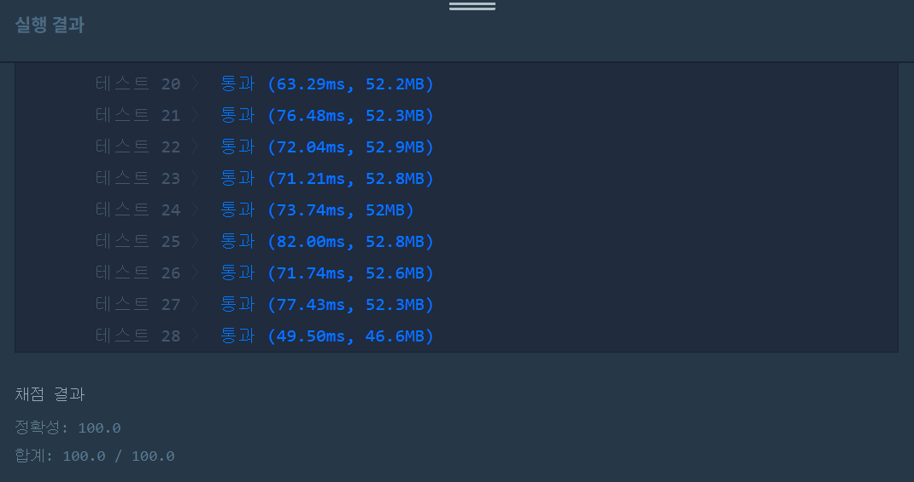

문제
https://programmers.co.kr/learn/courses/30/lessons/60057
( ᐛ )و 도전
1. 설계
- 문자열을 자를 단위를 정한다(1~s.length/2까지가 가능).
- substring을 이용해 문자열을 잘라서 특정 문자가 반복되는지 확인한다.
- answer에는 압축한 문자열 중 가장 짧은 것을 저장한다.
2. 구현 (성공 코드)
/**
*
* @author HEESOO
*
*/
class Solution {
public int solution(String s) {
int answer = 1000;//s는 최대 1000이하임
String str1="", str2="", result="";
int cnt=1;
if(s.length()==1) return 1;
for(int i=1;i<=s.length()/2;i++){//쪼갤 단위 갯수
str1=s.substring(0,i);
cnt=1;
result="";
for(int j=i;j<s.length();j+=i){
str2=s.substring(j,j+i);
if(str1.equals(str2)) cnt++;//문자가 반복된다면
else{
if(cnt==1) result+=str1;//str1이 반복된 적이 없다면
else result+=cnt+str1;//한번 이상 반복됏다면
cnt=1;//초기화
str1=str2;
}
if(j+i+i>s.length()){//다음 str2를 찾기엔 substring 범위가 벗어난다면
if(cnt!=1){
result+=cnt;
}
result+=s.substring(j,s.length());
answer=Math.min(answer, result.length());
break;
}
}
}
return answer;
}
}
3. 결과
 성공٩(˘◊˘)۶
4. 설명
- 쪼갤 수 있는 단위 갯수는 1부터 s.length()/2까지이다.
- 문자열이 반복되는지 확인하기 위해서 str1, str2를 두고 비교한다.
- str1+str2=s.length()일 때가 최대이므로 1부터 s.length()/2까지가 문자열을 자를 수 있는 범위이다.
- 문자열 단위를 나타내는 변수는 첫 for문의 i이다. 첫 str1은 0부터 i개이므로 substring으로 문자를 추출한다.
- 갯수 단위에 따라 str1, str2를 추출해서 비교한다.
- str2는 str1이 끝난 지점 다음부터인 j부터 i 갯수만큼이다. 따라서 substring(j, j+i)가 된다.
- str1과 str2가 같다면 cnt++로 반복 횟수를 증가한다.
- 같지 않다면 문자열이 반복되지 않는다는 뜻이다. cnt==1이라면 str1이 반복된 적이 없으므로 result에 숫자 없이 str1을 저장한다.
- cnt!=1이라면 str1이 한 번 이상 반복되었단느 뜻이므로 반복된 횟수인 cnt와 str1을 result에 넣어 압축된 문자열을 저장한다.
- result에 문자열을 넣었으므로 cnt=1, str1=str2로 초기화한다.
- str1=str2의 의미는, str2가 str1와 같지 않기 때문에 이제 str2와 같은 문자열이 있는지 비교해야 하므로 str1에 넣어서 다음 진행을 할 수 있게 한다.
- 다음 비교할 문자열 갯수가 충분한지 확인한다.
- 두 번째 for문의 j는 str2의 시작점을 나타내기 때문에 j++가 아닌 j+=i만큼 증가한다. 따라서 다음 비교를 위해 str2를 substring으로 추출할 때, 충분한 갯수가 있는지 확인해야한다.
- 마지막 if문은 substring이 인덱스 범위를 벗어나지 않도록 체크하는 코드이다. j+i는 다음 str2의 시작점, 뒤의 i는 끝나는 점을 나타내며, 따라서 j+i+i는 다음 str2 문자열의 끝 인덱스를 뜻한다. 인덱스가 s.length()를 넘어간다면 더 이상 i개만큼 문자열을 자를 수 없다는 뜻이므로 나머지 문자열들을 result에 붙여준다. 이때 지금까지 반복된 문자열이 있는지 cnt를 체크해야한다.
- result 생성이 끝났다면 answer에는 기존 answer값과 현재 result의 값 중 최솟값을 저장한다. 참고로 s의 길이는 1~1000이하로 문제에 제시되었으므로 answer의 초기값은 1000으로 넣었다.
해결 완료!
어려운 자료구조를 쓴다던가의 문제는 아니지만 substring의 범위를 잘 체크해야하는 문제였다.
참고
- [자바/알고리즘] 프로그래머스 [2020카카오공채] 문자열 압축 https://lee1535.tistory.com/61